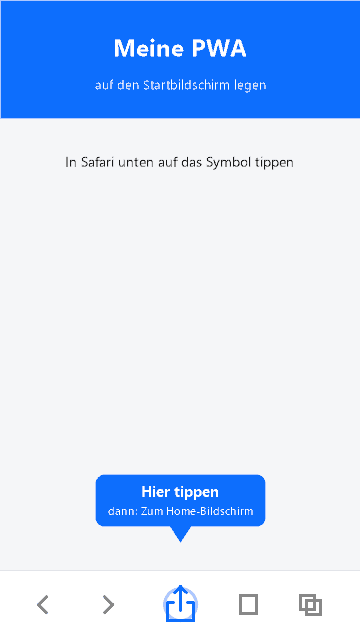

Lege diese PWA-App auf deinem Gerät ab und nutze sie wie eine native App.
So installierst du die App auf dem iPhone/iPad:

Falls du das Teilen-Symbol direkt in der unteren Leiste siehst, kannst du es auch direkt antippen.
✅ Die App wurde installiert! Du findest sie jetzt auf deinem Startbildschirm.
Die App ist bereits installiert. ▶ App öffnen
🔍 Diagnose (warum erscheint der Button?)
- Protokoll: …
- Service Worker: …
- Manifest: …
- Plattform: …
- Anzeige-Modus: …
- beforeinstallprompt: …